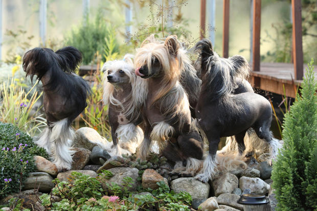

Chinese Crested Dog
The Chinese Crested dog breed was created to be an invalid's companion. In that setting, you wont' find a better dog. They can almost read your mind and will lie in bed for hours without moving a muscle. They have almost no desire to go out and run around like regular dogs, although they are athletic enough to jump surprisingly tall fences and compete in agility. Chinese Cresteds are not gregarious, but they are intensely social and bond quickly within their pack. They don’t accept strangers easily. Once it falls in love with you, you’ll have a little stalker on your hands — he’ll be eternally, thoroughly devoted.
Another interesting fact is that they are descendants of the African Hairless Dog. Many people depended on the now-extinct African hairless dogs for their warm bodies. Thanks to their lack of fur, they emitted warmth and were often used as bed warmers and hot compresses for aches. This likely led to the rumor that the dogs had magical healing powers. When they were brought to China, they were bred to be smaller.

Because they're so bare, Chinese Cresteds need to layer up in colder temperatures.
More Facts About The Chinese Crested Dogs:
- Chinese Sailors Loved Them - Chinese crested dogs accompanied Chinese sailors on their many voyages during the 14th century. The dogs would catch rats on the ships and thus help prevent the spread of the Black Death. The dogs themselves weren't likely to contribute to the spread of the disease, because their lack of fur meant they were less likely to get fleas.
- There Are Two Different Kinds - The Chinese crested comes in two varieties: hairless and powderpuff. Powderpuff dogs have a thick coat of silky fur all over their bodies. This is a recessive gene, which means you can find hairless and powderpuff puppies in the same litter.
- There Feet Are A Little Different From Other Dogs -Compared to other breeds, Chinese crested dogs' feet are elongated. Some call this longer paw print “hare-like.”.
Facts and Pictures can be found at http://mentalfloss.com/article/65288/11-quirky-facts-about-chinese-crested